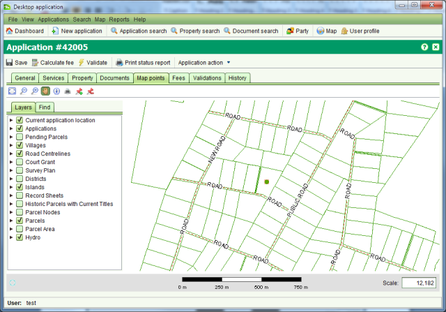

You can indicate the approximate location of an application using the Map points tab of
Application Details and the Locate Application tool. The tool allows you
to add more than one location point for the application in case the application covers a
large or disjoint area.
Locate Application tool. The tool allows you
to add more than one location point for the application in case the application covers a
large or disjoint area.

Application Details Map Points tab
The location point can help to identify other applications in close proximity to the new application that could have a bearing on the new application or vice versa.
The  Application Location Remove tool can be
used to remove all location points that have been added to an application.
Application Location Remove tool can be
used to remove all location points that have been added to an application.